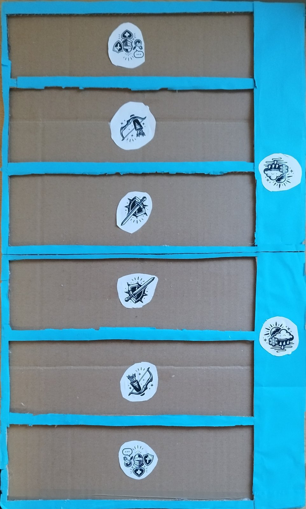

1. Játék leírása
A Mithic Decks egy stratégiai, csapatos kártyás társasjáték, amelyet 5 fő játszhat. A játékban két kétfős csapat mérkőzik meg egymással, egy játékvezető pedig felügyeli a kártyák kiosztását, a pontozást és a szabályok betartását.
2. Szerepek
- 2 kétfős csapat: a csapatok egymás ellen játszanak.
- 1 játékvezető: ő osztja a kártyákat, figyeli a játék menetét és segít a vitás helyzetek eldöntésében.
3. Szerepkiválasztás
1. Először ki kell választani a játékvezetőt. A játékvezetőt a játékosok szabadon kijelölhetik, például valaki önként jelentkezhet.
2. Ha senki nem szeretne játékvezető lenni, akkor a játékosok kő-papír-ollóval döntik el, ki legyen a játékvezető.
3. Miután megvan a játékvezető, a maradék 4 játékos két csapatot alkot. Mindkét csapatban 2 játékos van.
4. Felkészülés
4. A játékvezető megkeveri a teljes paklit.
5. Ezután véletlenszerűen kioszt csapatonként 15-15 kártyát.
6. A csapatok a saját 15 kártyájukat két részre osztják, hogy mindkét csapattagnak legyen kártya(egy csapattagnak max 10 kártya lehet).
7. Minden játékos a saját 10 lapjából játszik. A játékosok a lapjaikat titokban tartják az ellenfél előtt.
5. Kártyatípusok
A játékban 4 fő kártyatípus van:
8. Támadó kártya: csak a Támadó sorba lehet letenni.
9. Távoli kártya: csak a Távoli sorba lehet letenni.
10. Segítő kártya: csak a Segítő sorba lehet letenni.
11. Időjárás kártya: külön helyre kell kijátszani, és mindkét játékos megfelelő sorára hat.
- Nap: semlegesíti és eltávolítja az összes aktív időjárás kártyát.
- Hóvihar: minden Támadó sorban lévő kártya értéke 1 lesz.
- Köd: minden Távoli sorban lévő kártya értéke 1 lesz.
- Zuhany: minden Segítő sorban lévő kártya értéke 1 lesz.
A Törhetetlen kiegészítéssel rendelkező kártyákra az időjárás nem hat, tehát megtartják az eredeti értéküket.
7. Kiegészítések
7.1. Örökké barátok
Ha két „Örökké barátok” jelölésű kártya közvetlenül egymás mellé kerül ugyanabban a sorban, akkor mindkét kártya értéke megduplázódik.
Ha egy időjárás kártya hat az adott sorra, akkor először az időjárás hatása érvényesül, és csak utána számít a duplázás. Például ha egy kártya értéke az időjárás miatt 1 lesz, akkor az „Örökké barátok” hatás miatt 2 pontot ér.
7.2. Törhetetlen
A Törhetetlen kiegészítésű kártyák figyelmen kívül hagyják az időjárás kártyák hatását. Ezeknek az értéke nem csökken 1-re, akkor sem, ha az adott sorra időjárás hat.
8. A játék menete röviden
12. A játékosok kiválasztják a szerepüket.
13. A játékvezető kiosztja a kártyákat.
14. A csapatok lejátszák az első és a második szettet.
15. Ha az állás 1-1, akkor extra szett következik.
16. Az a csapat nyer, amelyik először megnyer 2 szettet.
9. A szettek felépítése
A játék alapból 2 szettből áll. Az első szettben az egyik csapattag játszik az ellenfél egyik csapattagja ellen. A második szettben a másik két játékos játszik egymás ellen.
A szett végén a játékosok összeszámolják a kijátszott kártyáik pontértékét. Az nyeri a szettet, akinek több pontja van. Ha a két játékos pontszáma megegyezik, akkor a szett döntetlennek számít, és egyik csapat sem kap szettgyőzelmet.
Ha az egyik csapat mindkét szettet megnyeri, akkor a játék véget ér. Ha az állás 1-1, akkor extra szett következik. Az extra szettben a csapatok kiválasztják, melyik játékos képviseli őket.
A szett végén a kijátszott lapok kikerülnek a játékból. A fel nem használt lapokat a játékos átadja a csapattársának, aki később, például a második vagy az extra szettben még felhasználhatja.
10. Játékmenet egy szetten belül
Egy szettben két játékos játszik egymás ellen. A játékosok felváltva kerülnek sorra, és a saját játékterületükre helyeznek le kártyákat.
- A játékterület 3 sorból áll:
- 17. Támadó sor
- 18. Távoli sor
- 19. Segítő sor
A kártyákat a típusuknak megfelelő sorba kell helyezni. A játékos célja, hogy a szett végére nagyobb összpontszámot érjen el, mint az ellenfele.
- A játékos a körében két dolgot tehet:
- kijátszik egy kártyát a kezéből, vagy
- passzol.
Ha egy játékos passzol, abban a szettben már nem játszhat ki több kártyát. Az ellenfele viszont tovább játszhat, amíg ő is nem passzol. A szett akkor ér véget, amikor mindkét játékos passzolt.
11. Pontozás
Minden kártyának van egy pontértéke. Amikor egy játékos kijátszik egy kártyát, annak pontértéke hozzáadódik a játékos összpontszámához.
A pontok soronként számolódnak, majd a három sor pontjai összeadódnak. A szett végén az a játékos nyeri a szettet, akinek magasabb az összpontszáma.
Döntetlen esetén a szett döntetlennek számít. Ilyenkor egyik csapat sem kap szettgyőzelmet. Ha emiatt nem dől el a játék, akkor extra szett következik.
12. Extra szett
Extra szettre akkor kerül sor, ha mindkét csapat nyert egy-egy szettet, tehát az állás 1-1.
20. A csapatok kiválasztják, ki fog játszani az extra szettben.
21. Az extra szett előtt a játékvezető ellenőrzi, hogy a kiválasztott játékosoknak 8-8 lapjuk legyen. Ha valakinek kevesebb lapja maradt, a játékvezető addig oszt neki a pakliból, amíg újra 8 lapja nem lesz.
22. A játék kezdete előtt mindkét játékos legfeljebb 2 kártyát visszaadhat. Ezek helyett a játékvezető véletlenszerűen ugyanannyi új kártyát ad.
13. A játék megnyerése
Az a csapat nyeri a játékot, amelyik először megnyer 2 szettet. Ha az első két szett után az állás 1-1, akkor az extra szett dönt a győztesről.
14. Fontos pontosítások játék közbeni viták ellen
- Ha egy játékos passzol, az ellenfele még folytathatja a játékot.
- Az időjárás kártyák mindkét játékosra hatnak, nem csak arra, aki kijátszotta őket.
- A Nap eltávolítja az összes aktív időjárás kártyát.
- A Törhetetlen kártyákra nem hat az időjárás.
- A szett végét csak az jelenti, ha mindkét játékos passzolt.
